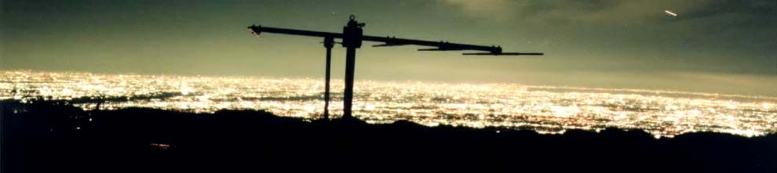

|
Lake Miyagase, the starting point, is a fairly new artifical lake |
Niklas with lamen from a thermos. |
|
The end of the first day, the sun setting behind Fuji-san (from Tanzawa-yama). |
One of the many deer in Tanzawa. They do not appear to be overly afraid of humans, this one was some 10 meters away. |

A night view of Tokyo (and the huts TV antenna)
from To-no-dake. You can see the outline of Tokyo Bay to the right.